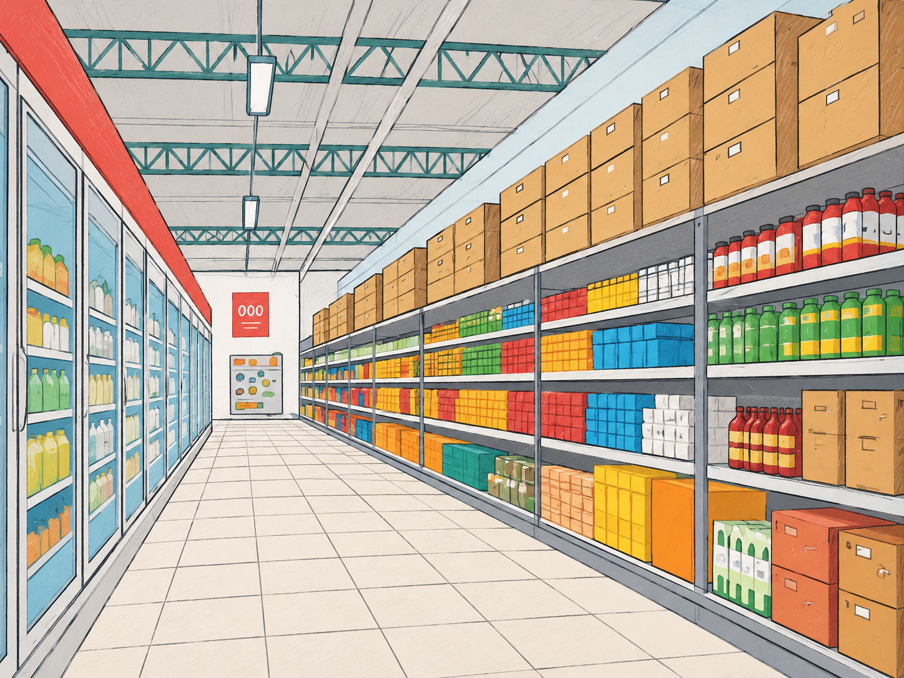
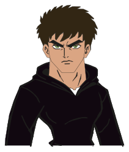

6 ETAPAS · 3 FINALES
El local cerró y Nico quedó adentro.
La salida principal está cerrada. Ayudalo a encontrar otra antes de que vuelva el guardia a las seis.
Una aventura de Nico en el supermercado


Nico todavía está adentro.
6 ETAPAS · 3 FINALES
La salida principal está cerrada. Ayudalo a encontrar otra antes de que vuelva el guardia a las seis.